LUV MOVES ME
Creative Director, Writer & Photographer: Omar Silwany
Creative Director, Art: Jason Borzouyeh
Dentsu Utama

Lu.V. Anthem


Lu.V. Tokyo :30 TVC
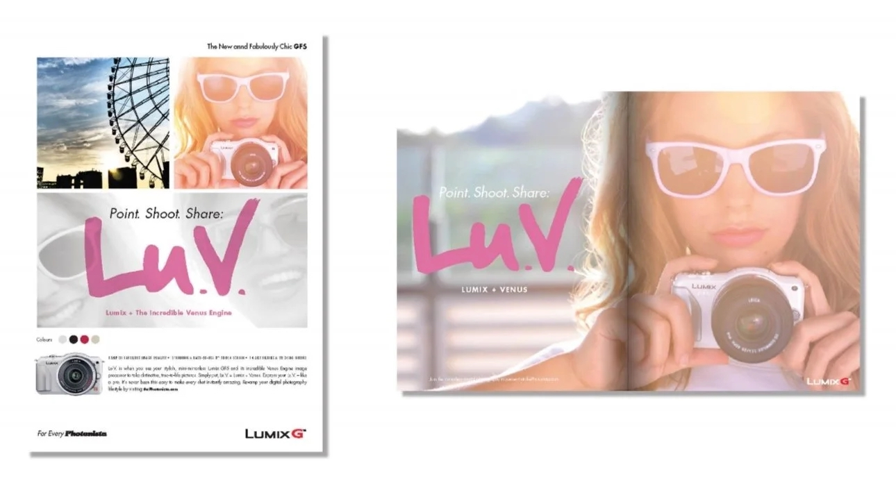
GF5 Print Single and Double Page Spread
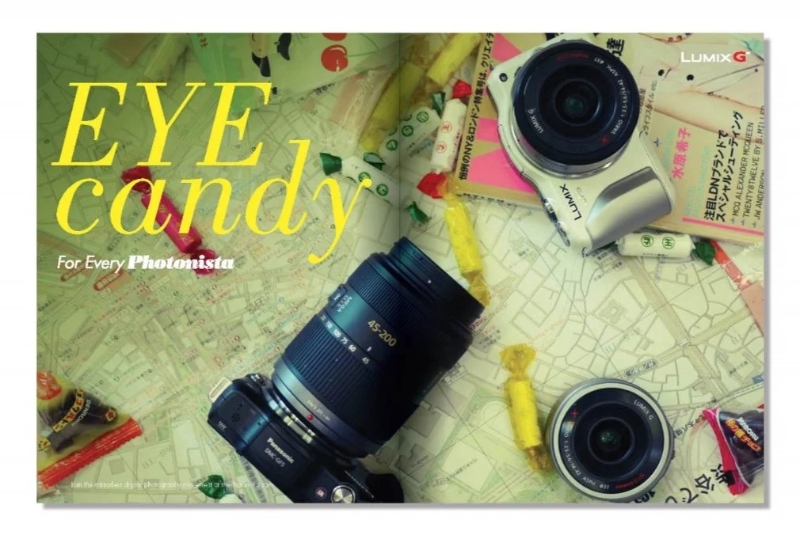
GF5 Print Double Page Spread 2
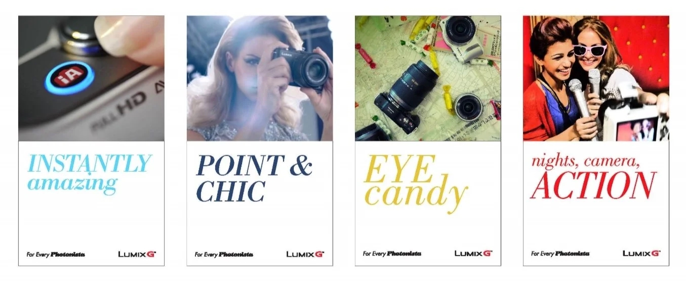
GF5 Print Series One
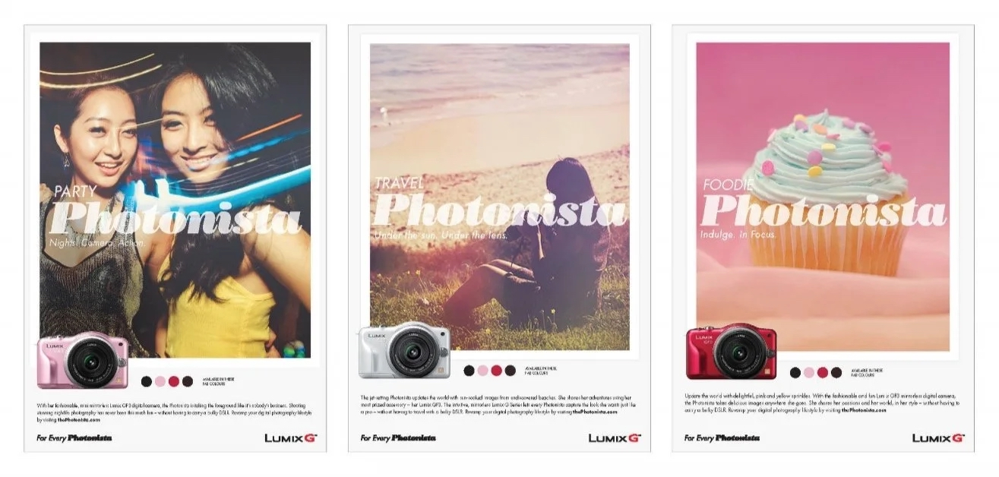
GF5 Print Series Two
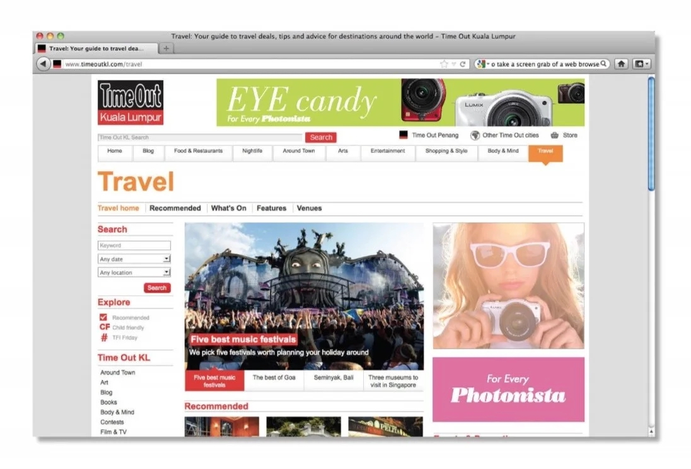
GF5 Digital Ads
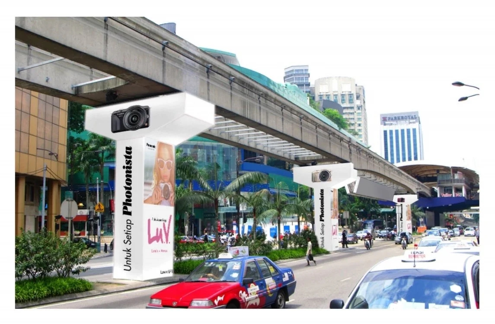
GF5 OOH
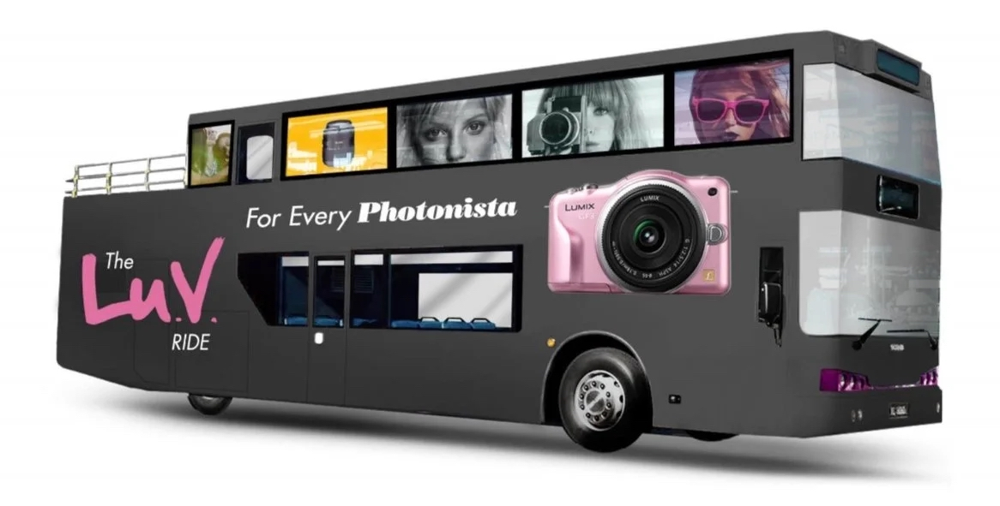
GF5 Bus Wrap
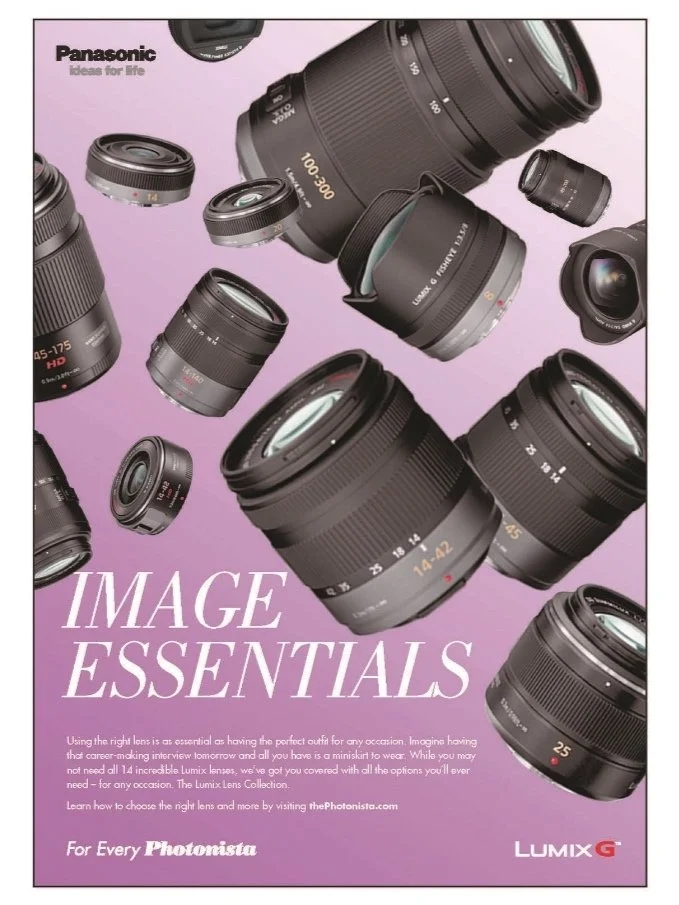
GF5 Lens Style Guide
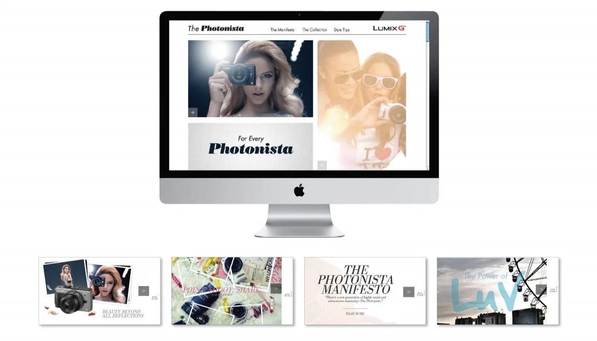
GF5 Online Style Guide
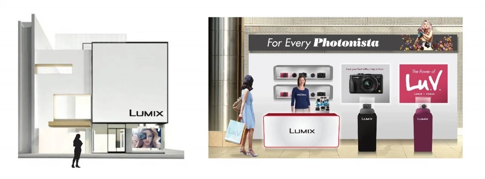
GF5 Retail
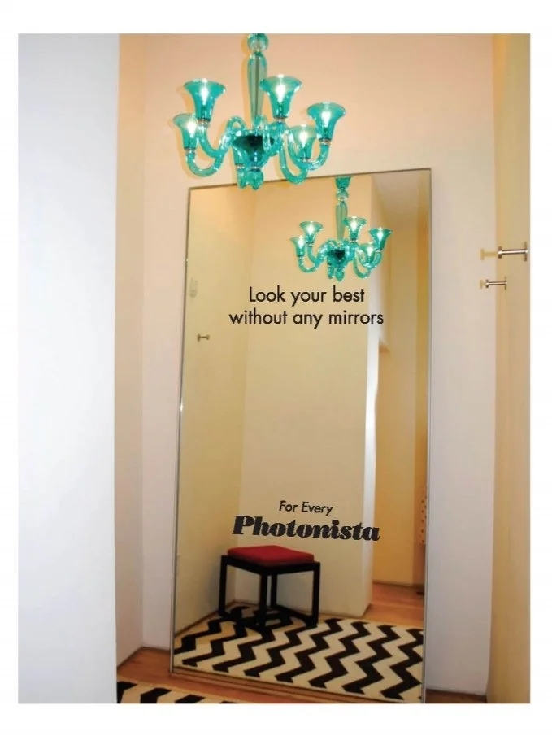
GF5 Dressing Room Mirror Placement
THE CHALLENGE
Panasonic's Venus image processor was a breakthrough — the world's most advanced system for mirrorless cameras. But technical superiority doesn't move hearts. The GF5 was aimed at the accessible end of the market. Young photographers. Aspiring creators. People who didn't care about processors. They cared about sharing their lives.
THE INSIGHT
Venus. The goddess of love. The processor's name already contained the transformation we needed. Lu.V. — Lumix + Venus = Love. We turned a technical spec into an emotional movement. Not a camera system. A way of sharing everything you love.
THE WORK
We pitched two campaigns for Lumix G Series. They bought both. This was "For Every Photonista" — the GF5 rollout. Lu.V. Tokyo: a :30 TVC shot in Malaysia and Tokyo showing a weekend shopping trip. The Lu.V. Anthem established the movement. Then we rolled it out 360: print, OOH, digital, style guides, retail, even dressing room mirrors and tour bus wraps.
THE IMPACT
A processor became a philosophy. Venus became Lu.V. Technical specs became stories worth sharing. The campaign proved that even in tech categories, transformation starts with feeling. When you give people a reason to love the technology, they'll learn the specs on their own.